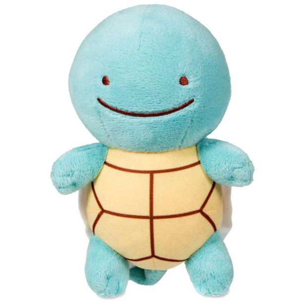

¿Necesitas ayuda? ¡Cuéntanos tus síntomas!
Selecciona que sintomas tienes y a partir de ello te brindaremos una lista de las enfermedades que coincidan con tus síntomas y te daremos las mejores recomendaciones para que calmes las molestias en lo que puedas acudir a un médico pronto. ¡RECUERDA NO AUTOMEDICARTE!
Aprende sobre enfermedades:
Migraña

Gastritis
Hipertiroidismo
Asma